路漫修远：求索通勤路
通勤路上“无风景”，每个人都想拥有“重塑时空的权力”……
点击开始
导语
“全国超1400万人承受60分钟以上极端通勤”
点击继续
2022年11月5日，#全国超1400万人承受60分钟以上极端通勤#的话题冲上微博热搜榜。该话题仅在微博单平台阅读次数达到了1.3忆，讨论次数1.5亿次。我们爬取了词条下的相关评论，发现网民的情绪多呈负向，例如工资、交际、累、麻木等。Kiron Chatterjee等国外研究者团队曾构建起通勤和主观幸福感间的关系模型显示，通勤带来的消极影响不仅局限于通勤过程中，更会以一种“外溢”的姿态继续侵扰我们的生活，最终影响到人们的整体主观幸福感。可见，通勤时耗直接关乎人们对于生活满意度，是一个亟待关注和优化的社会问题。基于此我们确定以通勤时耗为数据研究主题，并希望能够提供优化思路。
图1：2022年城市通勤时耗同比上升图
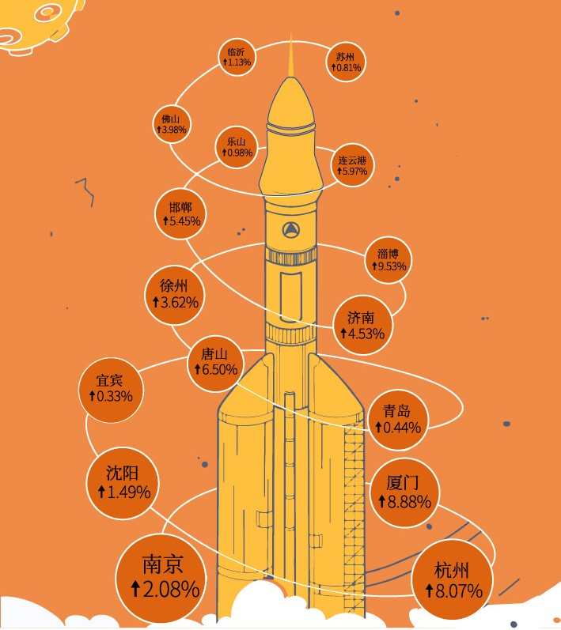
数据来源：百度地图《2022年中国主要城市通勤检测报告》
《2022年中国主要城市通勤监测报告》显示，去年，全国承受60分钟以上极端通勤的人口超1400万，32个城市的极端通勤比重在增加。其中，青年群体有近600万，占比超过40%。我们依据《2022中国主要城市通勤监测报告通勤报告》对全国主要通勤城市进行分析，整理出来以下排名榜单，发现2022年通勤时长排名前五十的城市中，有十六个城市（南京、杭州、沈阳、厦门、宜宾、青岛、唐山、济南、徐州、淄博、邯郸、连云港、乐山、佛山、苏州、临沂）同比2021年通勤时长仍在上涨。这些城市既有新一线城市和二线城市，也有三四线的小城市（依据《新一线城市研究所的2022城市商业魅力排行榜》进行一二三四线城市划分）。我们对此展开了相关数据搜集和分析，以此探究不同等级城市通勤时耗上涨的综合因素。
城市人口：城市发展过程中最能动的、基础的要素。
图2：2021年16城市人口吸引力表
数据来源：百度地图
在《2021年度全国城市人口吸引力排行榜》的TOP300中，16个城市全部上榜，此榜单人口吸引力的衡量指标主要是某个城市新流入的常驻人口（在一个城市驻留超过2个月的人口）与全国所有城市新流入常驻人口均值的比值。
而人口吸引力强的城市，就意味着流入该城市的人口数量多。我们选取的16个城市大多数处于人口流入较多的地区。
图3:2019年-2021年人口增量图
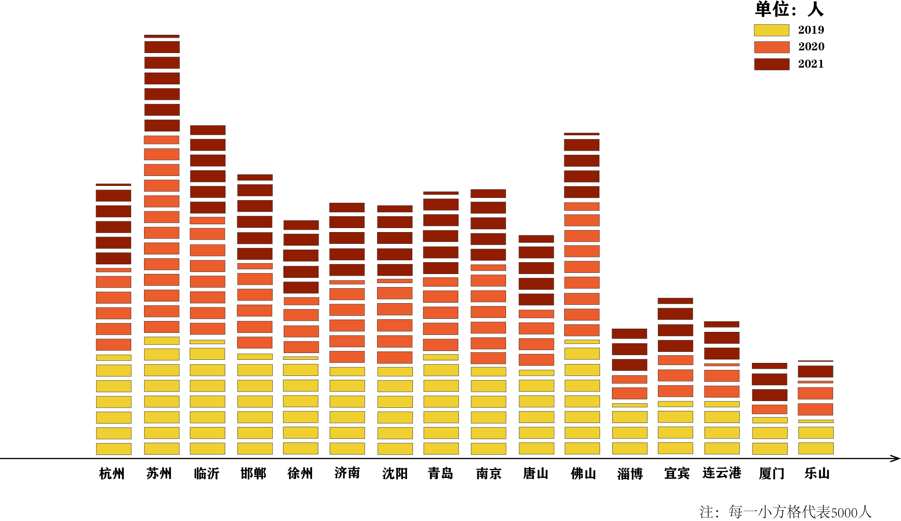
数据来源：2022LandScan人口数据集
从2016年至2021年的人口数据来看，
通勤数据上升的城市，无论是几线城市，人口增长都呈现上升趋势。而人口因素是城市经济发展过程中最能动的、基础的要素，人口数量增多会充实城市的发展活力。 众所周知，新一线城市的发展前景、经济水平、就业机会等大多远超过二三四线城市，且其相较于一线城市在生活成本、落户等方面上也具有自身的优势，故除了北上广深这类超一线城市，新一线城市也逐渐成为人们流向的选择。人们往往会因此认为，小城市可能会因为自身吸引力、发展前景不如大城市而流失人口，且年轻人都涌入大城市工作生活，生育意愿和人口数量都将会因此下降。
但不同于固有观念，值得注意的是，根据上表数据，2016年至2021年5年间，二线城市临沂、徐州人口增长量分别居于第二、第四，更出乎意料的是，邯郸作为三线城市人口增量竟跃居在南京之前。而此类城市的城市形态往往产业集中于城市的某一部分，就业机会相对少却集中，故很容易引发市内部分区早晚高峰的通勤压力；而新一线城市的吸引力增强，而交通设施仍处于发展规划期，人口的增加也会带来一定的交通压力。
城市经济：吸引人口的“风向标”
图4：2010年-2020年新一线城市与全国人均GDP走势比较图

数据来源：2020数位观察
图5：2010年-2020年二线城市与全国人均GDP走势比较图
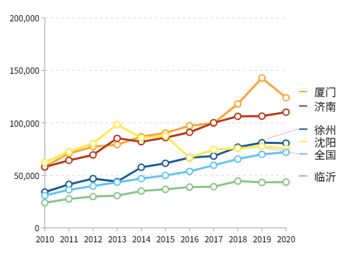
数据来源：2020数位观察
图6：2010年-2020年三四线城市与全国人均GDP走势比较图
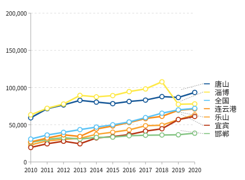
数据来源：2020数位观察
据数据分析，选定城市十年间（2010-2020）的GDP处于稳步增长期，可见城市经济发展稳中向好，预期发展乐观。受到经济发展预期影响，越来越多务工人员选择这些城市就业，加大了交通压力。
城市房价：城市人口打拼的目标
职住分离度高，办公地与居住地间“遥遥相望”，对于上班需要跨过大半个城市的年轻人来说，房价、房租、房贷，“防”不住的“房”既是压在身上的“三座大山”，也成为了职场人打拼的底色和动力。
图7：16城市区内平均房价
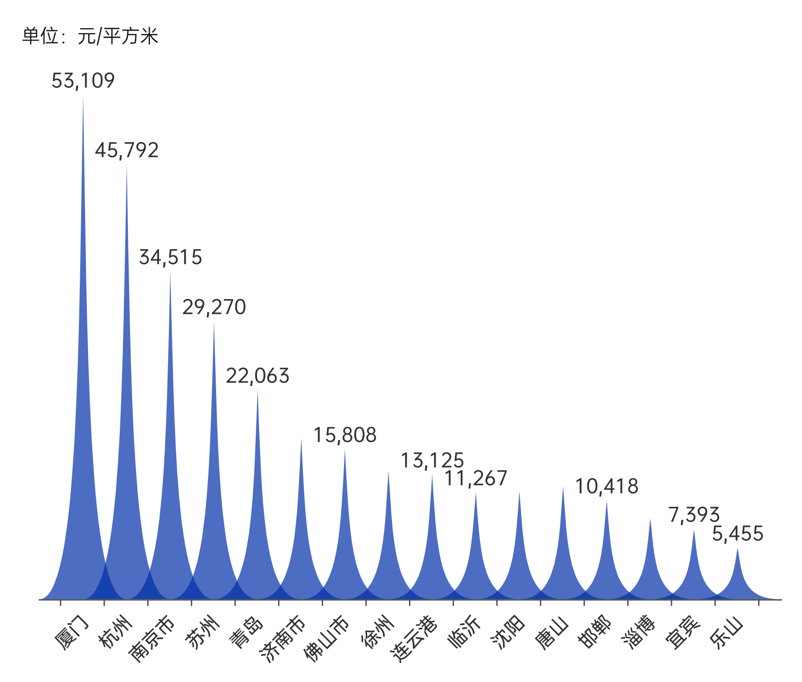
数据来源：房天下（2022年12月）
与西方城市的人口和就业郊区分散化相比，我国城市居住郊区化远远快于就业的郊区化，新增住房更多分布在外围地区，而就业机会却聚集在中心区。
新一线与二线城市中心商业区房价与周边相差甚远，南京市房价每平米最高相差3-4万元，平均房价为每平方米30879元，“全国最美城市”厦门房价差最高达到了每平米5万元，以60平米的公寓为例，在较为偏远地区买房可至少剩下180万。三四线城市房价差相对较小，区域差距在1-2万左右，但随着“新城”的出现，加之公共交通并不如一二线城市便利，导致很多地区公司在新城，生活在老城的情况，通勤路上仍是“堵”字当头。
对于在工作地居住位置的选择，超四成职场人选择居住在市区与郊区之间，37.89%选择居住在市区，相对低廉的房租可以供“打工人”为自己提供更好的精神和物质生活，网友小C说“没有通勤不友好的说法，只是买不起合适的房子而已，只能在存款里找点满足感，加油攒钱为以后买房做准备，又或是下班以后吃顿好的，抚慰一下一天的心灵，对打工人而言就够了。”
图8：2021职场人居住与通勤报告
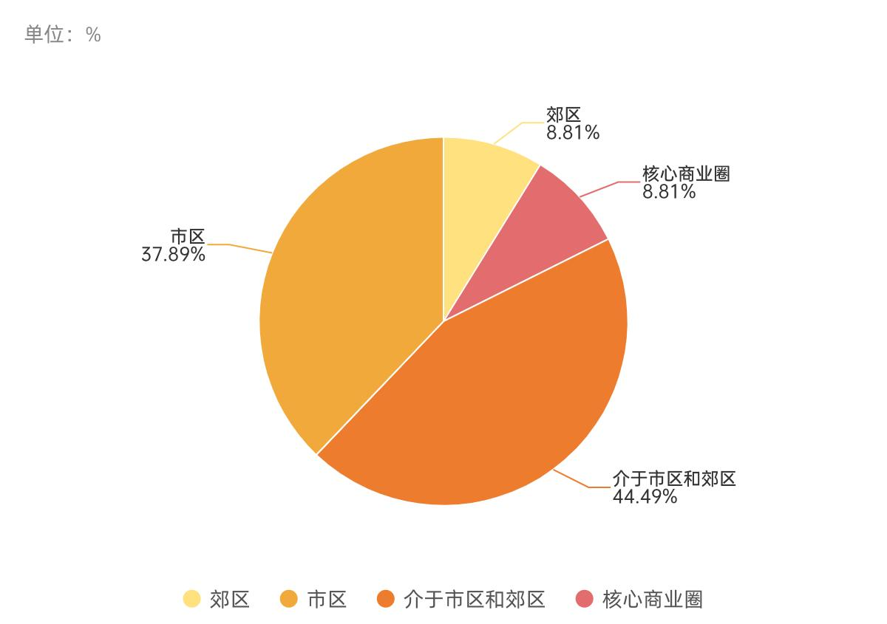
数据来源：猎聘大数据研究院 （2021年）
《2021职场人居住与通勤报告》显示，房租与城市的发达程度、人均工资水平等息息相关，如今大多数打工人选择“先租房、后买房”，仅有36.93%的职场人会因超长通勤而辞职，剩下的63.07%都选择了继续延续这种工作和通勤状态。
此外，从代际的角度来看，
职场人的年龄越小，对通勤时长的忍受度反而越高。80后职场人中，不会因通勤时间而选择辞职的人占比为54.6%，而95后则上升至69.7%，而2021年中国应届毕业生选择的租房能接受的单程通勤时间1-1.5H的占比达39.6%。毕业生求职时的主要考虑因素排名前三的分别是：薪资待遇、个人发展和工作地点，年轻人似乎把长时间通勤当作“常态”
对于能接受自己几年内处于租房的状态，80后主要集中在3-5年内，占比达到65.21%，90后则主要集中在3年内，
在房价日益上涨的今天，买房几乎仍然是所有职场人未来重要的规划。
城市交通能力：城市流动的“命脉”
图9：2021年各城市城轨交通运营线路制式规模统计
数据来源：2021中国城市轨道交通协会
我们从《2021年度统计和分析报告》中，查找了抽出的16个城市，一共抽取到10城的城轨交通的数据，还余六城市内无城轨交通。而从数据中也可见，南京城轨发展相较于其他城市领先，但仍不及北上广深等城市的完善，在通勤常论的地铁上，16城中7城缺乏地铁交通。
图10：2021年各城市地铁客运情况和条数
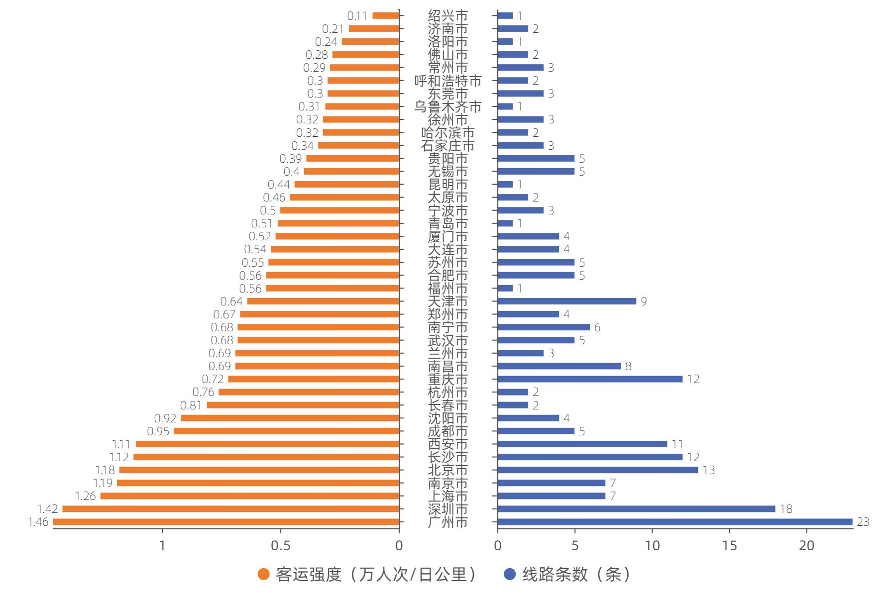
数据来源：2021中国城市轨道交通协会
于是我们搜集了有地铁交通的城市的地铁运营情况，全国平均客运强度为0.63，南京、杭州、沈阳三城，尤其是南京，进乎平均客运强度的两倍，而其线路条数并不多，有一定的客运压力，早晚高峰时会面临拥挤状况。而如佛山、济南等城市，虽然对比下，客运强度显得不强，但因其线路短且少，覆盖范围小，当地相比选择地铁更愿意选择公交或其他交通工具等通勤，对分担通勤压力的影响有限。
图11：2020年其他交通工具保有量
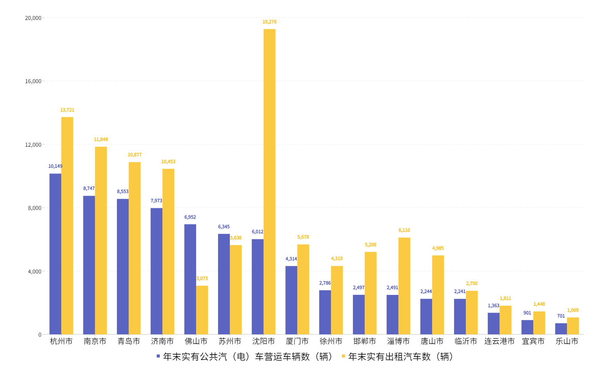
数据来源：国家统计局2020年数据
而由于部分城市缺乏城轨交通的数据，需要其他交通工具的数据来分析，故选取了公交和出租车数据的，值得注意的是沈阳出租车数极多，相较于苏杭南京，沈阳的地铁线路短，线路条数较少，公共汽车也相对较少，而沈阳市面积较大，交通需求量较大，或是造成出租车数量多的因素。
图12：2017-2020年历年公交汽电车客运量增减情况（万人次）
数据来源:2017-2020年国家统计局
随着出行工具的更新换代，公交汽车客运量总体呈现缓慢下降的趋势，由于新冠疫情，2020年客运量呈现断崖式下降。但从2016年至2019年的数据来看，公共汽电车客运量总体上表现为逐渐下降的趋势但仍有部分城市的客运量在上升，如青岛、沈阳，此时正是部分城市城轨交通发展的和城市发展时期，地铁交通兴起，私家车的拥有量上升。新一线城市的公共汽电车客运量下降数量多，因其城轨和私家车分担了相对多的运量，而二三四线城市城铁发展滞后，且由于市区面积相对小，即使发展了城铁，但由于其覆盖面积有限，对于市民而言，选择公汽更为方便划算。
总体而言，上述城市的各类交通工具共同分担城市交通压力，不同的城市各有其侧重，新一线城市城铁负担部分相对重，但仍处于发展中，尚未形成如一线城市那般的完整体系；而二三四线的城市的城轨交通少数有建设，多数处于规划时期，更多地依赖公交、出租等工具，还未形成高效的交通出行体系。近年来，也有越来越多的年轻人正在离开一线城市，选择了“返回”，在人类与城市的故事里，是否真的增加了回归的章节，我们仍需探究。但从上文来看，新一线和二三四线城市的人口确实处于不断增长的状态，而这些不断增加的人口在为这些城市带来未来发展活力的同时，因这些城市交通设施仍在发展期，会给交通通勤带来一定的压力。
公共服务：城市的“软实力”
图13：2021年城市公共服务指数
数据来源：2021南方周末
如果说经济发展是一座城市的“硬实力”，那么公共服务便是也具有很重要作用的“软实力”，2021年的公共服务榜单综合考察了城市的住房、教育、医疗、消费、文化、交通等因素进行城市排名。我们选定的城市里分别有南京（3）、苏州（4）、杭州（5）、济南（6）、沈阳（7）、青岛（13）、佛山（38）、唐山（39）、徐州（45）、厦门（52）进入此排名榜单。这些城市的整体公共服务能力较好，更易留住本地人才和吸引外来人口长居或务工。南京、苏州、杭州、济南、沈阳更是排名进入前十名，超过全国平均公共服务水平，这些城市基础服务能力更加完善，能够承受未来更大的城市发展规模和水平。而十六城中宜宾、淄博、邯郸、连云港、乐山、临沂未能上榜，说明其目前城市服务能力仍处于发展期，而其人口不断增长，城市压力增大，或是影响通勤时耗的因素之一。
高校：城市未来人才的培养地
图14：2022各城市高校数量图数
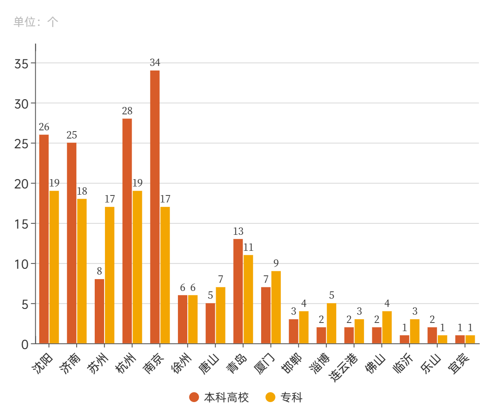
数据来源：2022阳光高考信息平台&中国高校排名
高校承担着培养人才的重任，是影响城市教育方面的重要因素。衡量一个城市未来发展空间的重要指标之一就是高校的数量及质量。我们对选定城市的高校数据进行搜集和整理发现，整体来看，选定城市均有本科高校或专科院校。从总数上看，南京、杭州、沈阳和济南的学校数量最多，远多于其他城市。苏州、青岛、厦门、徐州、唐山的高校数次之。其余城市略少。高校的数量多少大致与城市等级相符合。选定城市均拥有高校教育资源和人才，可以源源不断为城市提供新鲜血液，城市未来前景活跃。
典型案例：杭州
图15：杭州市2019-2021GDP与拥堵指数增长趋势对比图
数据来源：百度地图《2022中国城市交通报告》、数位观察
随着民营经济蓬勃、数字经济崛起，“互联网之都”杭州近年GDP不断增长，经济环境好，就业机会多，未来发展空间大。到选择杭州就业的人数上涨，加剧了通勤拥堵问题，通勤耗时也相应增加。
图16：杭州交通情况图
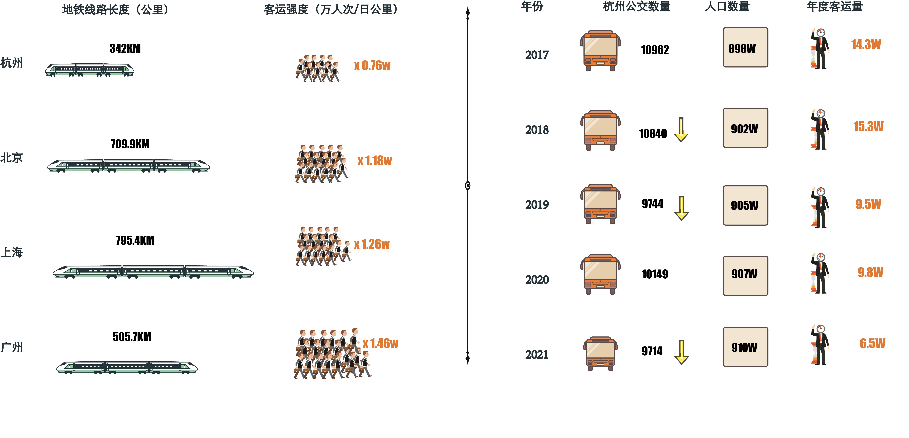
数据来源：国家统计局（2022）、中国城市规划院（2022）、高德地图（2022）
从城市公交车数量的对比，可以间接反映出该城市的发展潜力和活力后劲，以及该城市发展的规模。但作为新一线城市的杭州，近年在人口不断增长时公共交通数量却呈下降趋势，这在一定程度上增加了上班“公交族”的出行难度。
地铁覆盖不到的痛苦，简直是“苦中苦”，先后在杭州市中心和各区工作过的一位程序员这么吐槽杭州的地铁：“所有就职过的公司离地铁站最近都要1 公里，甚至有那么多家公司汇聚的滨江，连地铁都不通”
的确如此，杭州作为新一线城市，其轨道覆盖 800 米通勤比重仅为 14%，和通勤相对发达的一线城市相比相差甚远，可见，在提升城市交通规划方面，杭州“任重而道远”
监测案例和房价分析
图17：工作日早7时杭州各区拥堵情况
数据来源：高德地图实时监测（2022年12月）
图18：工作日早8时杭州各区拥堵情况
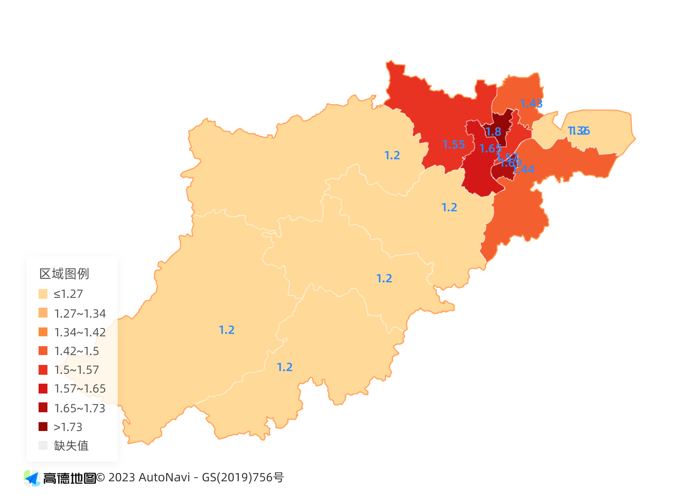
数据来源：高德地图实时监测（2022年12月）
图19：工作日早9时杭州各区拥堵情况
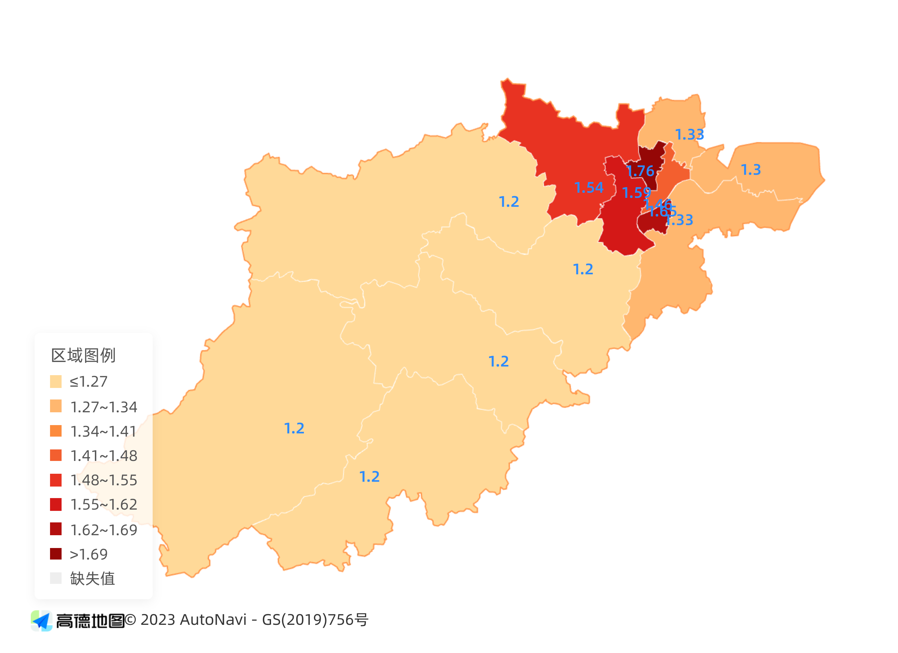
数据来源：高德地图实时监测（2022年12月）
为更好研究城市内拥堵区域变化规律，我们选取了一个工作日，在早高峰（7：00-9：00）和晚高峰（17：00-19：00）连续进行了数据检测。
以杭州城市分区拥堵指数变化情况为例，早晨7时最拥堵区域为拱墅区（1.45），紧随其后是上城区（1.34），其次是滨江区（1.3）和余杭区（1.32），再次是西湖区（1.29）和萧山区（1.27）。其余区域道路拥堵情况相对较好。到了早晨8时，拥堵指数各区均有上升，最拥堵区域依然为拱墅区（1.8），滨江区和西湖区的拥堵指数上升明显，分别为第二位（1.69）和第三位（1.65）。早晨9时，临平区、萧山区拥堵情况明显减缓，其他地区拥堵指数变化不明显。
图20：工作日17时杭州各区拥堵情况
数据来源：高德地图实时监测（2022年12月）
图21：工作日18时杭州各区拥堵情况
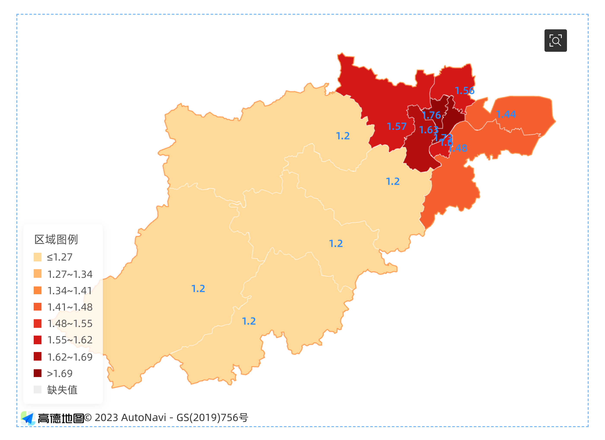
数据来源：高德地图实时监测（2022年12月）
图22：工作日19时杭州各区拥堵情况
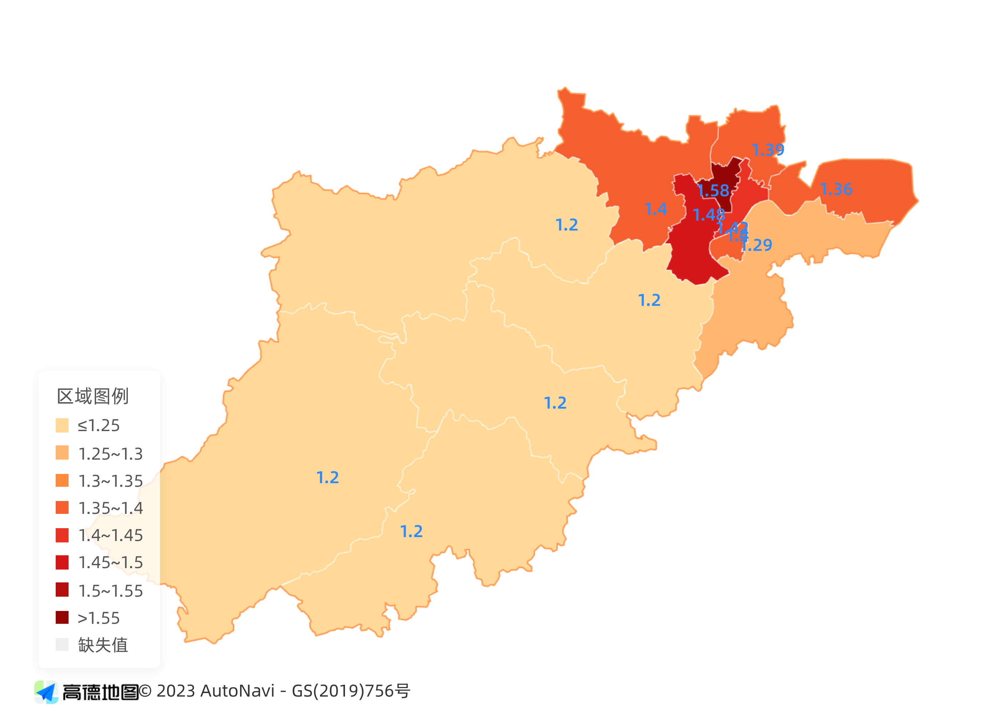
数据来源：高德地图实时监测（2022年12月）
晚上17时，拱墅区（1.68）、滨江区（1.57）拥堵情况最严重，余杭区（1.56）、上城区（1.56）、临平区（1.53）、西湖区（1.5）、钱塘区（1.4）依次递减。到晚上18时，上城区（1.73）西湖区（1.63）拥堵情况上升明显，萧山区（1.48）有所缓解。19时，各区的拥堵情况都有缓解，余杭区（1.4）临平区（1.39）、萧山区（1.29）拥堵指数下降幅度最大。
可以看出，早高峰时段拱墅区、滨江区、西湖区，余杭区，上城区是最拥堵区域。晚高峰时段，上城区，拱墅区，西湖区，滨江区的拥堵情况最为严重。
结合房价情况分析
图23：杭州各区平均房价
数据来源：房天下（2022年12月）
探究各区域房价得到，滨江、西湖、上城区房价最高，钱塘区、拱墅区次之，萧山区、余杭区再次，富阳区和临平区更低。房价最高的地区是杭州的中心城区，工作机会多，是通勤的高峰区，毗邻中心城区的其他区，房价较低，是许多通勤人买房的选择，所以同样人流量巨大，为通勤的拥堵的“常发”区域。杭州中心城区与其他城区房价差异较大，加剧了职住分离问题，导致通勤距离远，通勤时间只能被越拉越长。
中国城镇化已进入都市圈时代，但我国都市圈规划发展仍存在部分问题。其中，超长通勤逐渐受到重视，Kiron Chatterjee等研究者曾构建起通勤和主观幸福感（SWB）间的关系模型显示，通勤带来的消极影响不仅局限于通勤过程中，更会以一种“外溢”的姿态继续侵扰我们的生活，最终影响到人们的整体主观幸福感。
如今，通勤不仅仅是两个地点之间的距离，更是从时空与身心等多方面重新塑造了每个“打工人”的日常生活。
部分城市已建立优化制度，关心上班族的通勤状况，成都、北京、苏州、南宁、长沙等城市陆续 推出通勤提升专项行动，未来，越来越多的城市也将加入这一行列。
愿每一位打工人都能拥有重塑时空的权力，掌控自己的生活，不必被困在超长通勤时间牢笼中。
关于我们
小组成员：奚雨濛 朱睿婷 范婷睿
指导老师：吴小坤
学校：华南理工大学